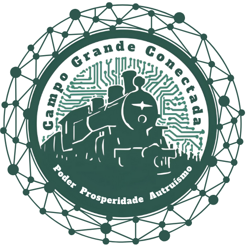
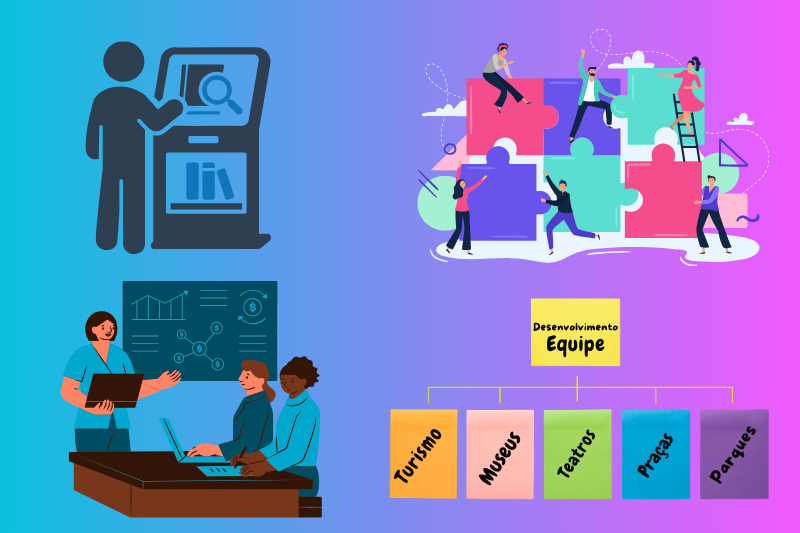
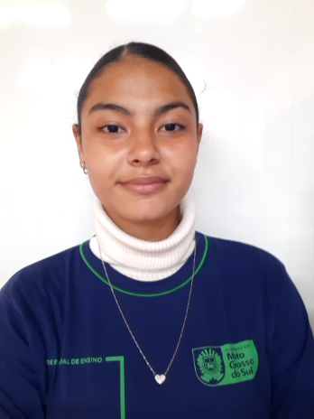
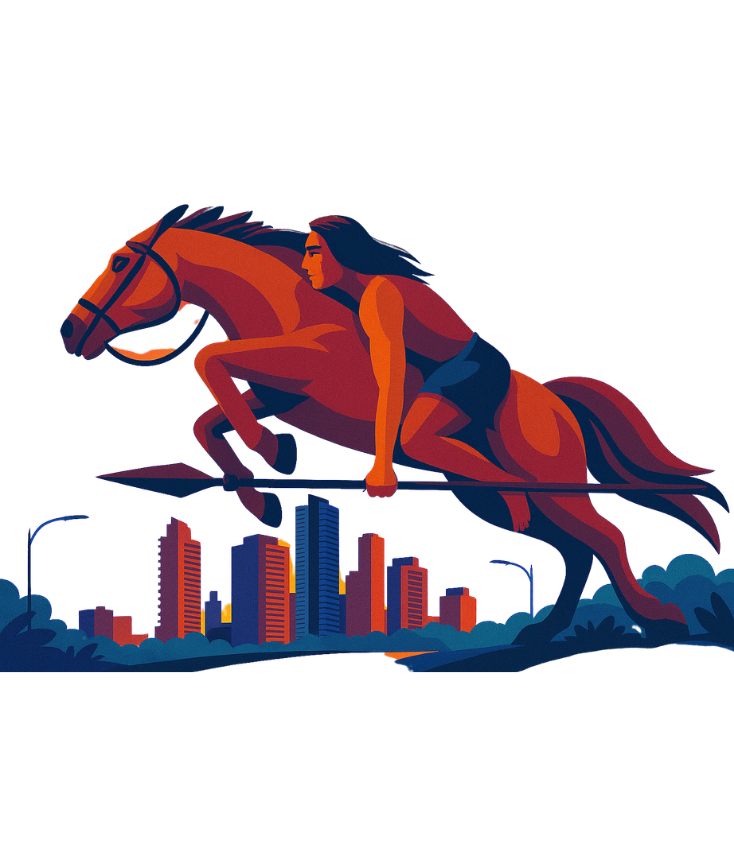

Potencializando o Desenvolvimento Local
Faça parte do desenvolvimento social, cultural e econômico de Campo Grande-MS.


Sobre o Projeto Campo Grande Conectada
Potencializando o Desenvolvimento Local.
Da Escola Estadual Coração de Maria, o projeto Campo Grande Conectada: potencializando o desenvolvimento local foi concebido e aprovado a partir da chamada Fundect nº 14/2024 – PICTEC MS – Edição 4.
Motivação da Pesquisa
Campo Grande tem muitos espaços subutilizados/invisíveis. A motivação é a crença de que locais conhecidos são superutilizados, enquanto outros com potencial nas 7 regiões são esquecidos, a criação deste Site interativo se apresenta como uma ferramenta inovadora para identificar, conectar e valorizar esses espaços. Busca-se democratizar o acesso e valorizar o que é próprio do território, estimulando a construção de redes colaborativas e o sentimento de pertencimento.
Objetivo da Pesquisa
O estudo tem como objetivo desenvolver um site voltado à identificação, conexão e valorização de espaços com potencial de desenvolvimento local em Campo Grande-MS, promovendo sua visibilidade, a integração comunitária e o fortalecimento das economias locais e das iniciativas culturais.
A Pesquisa
A pesquisa realizou levantamento bibliográfico e mapeamento territorial, catalogando 164 espaços distribuídos nas sete regiões urbanas da cidade.
A proposta busca fortalecer as redes locais, estimular o sentimento de pertencimento comunitário e ampliar o acesso às oportunidades disponíveis no território.
Por que conectar os espaços de Campo Grande?
Campo Grande possui diversos espaços culturais, econômicos e sociais com grande potencial de desenvolvimento local. Entretanto, muitos deles ainda permanecem pouco conhecidos ou com baixa visibilidade pública.
01 Mapeamento territorial
Identificação e categorização de espaços presentes nas 7 regiões urbanas de Campo Grande-MS.
02 Integração comunitária
O projeto promove a aproximação entre pessoas, espaços e iniciativas locais, fortalecendo os vínculos comunitários e incentivando a participação da população na valorização da cidade. Por meio da tecnologia e do acesso à informação, a comunidade passa a conhecer e utilizar com maior frequência os espaços culturais, esportivos e de lazer existentes em Campo Grande-MS.
03 Valorização do território
A proposta destaca a diversidade cultural, histórica e ambiental do município, evidenciando a importância dos espaços públicos e patrimônios locais como elementos de identidade coletiva. Ao ampliar a visibilidade desses locais, o projeto contribui para o reconhecimento das potencialidades de cada região da cidade e para o fortalecimento do sentimento de pertencimento da população.
04 Turismo sustentável e economia local
Ao incentivar a circulação de pessoas pelos diferentes bairros e pontos turísticos de Campo Grande-MS, o projeto fortalece o turismo sustentável e estimula a economia local. A iniciativa favorece pequenos empreendedores, atividades culturais, comércio regional e serviços locais, ampliando oportunidades de negócio e promovendo o desenvolvimento territorial de forma mais integrada e sustentável.


Análises do Projeto
A análise evidencia como a tecnologia pode contribuir para a valorização do território, o fortalecimento das redes locais, a integração comunitária e a ampliação das oportunidades de desenvolvimento social, cultural e econômico no município.
Realização
Coordenação, Desenvolvimento e Apoio Institucional
Escola Estadual Coração de Maria
Instituição responsável pela realização do projeto e pelo desenvolvimento das ações de pesquisa e divulgação.
PICTEC MS – IV Edição
Programa de Iniciação Científica e Tecnológica que possibilitou o desenvolvimento do projeto.
FUNDECT
Fomento à pesquisa científica, inovação e fortalecimento da produção acadêmica em Mato Grosso do Sul.
Processo de Trabalho
Etapas de Desenvolvimento do Projeto
Pesquisa & Mapeamento
Levantamento bibliográfico e territorial para identificar espaços de potencial desenvolvimento local nas 7 regiões urbanas de Campo Grande-MS.

Organização & Catalogação
Classificação dos espaços por categoria e sistematização das informações coletadas pela equipe. Locais para:
Divulgação & Conexão Comunitária
Construção do site e divulgação pública dos espaços para ampliar acesso e fortalecer vínculos comunitários.

Chamada para Ação
Qual espaço de Campo Grande-MS mais representa você? Ou... Tem algum evento para divulgar?
Galeria do Projeto
Registros da pesquisa, visitas e ações desenvolvidas
- Todos
- Pontos Turísticos
- Museus e Teatros
- Praças e Espaços de Lazer
- Práticas Esportivas
{kind=link}
{kind=link}
{kind=link}
{kind=link}
{kind=link}
{kind=link}
{kind=link}
{kind=link}
{kind=link}
{kind=link}
{kind=link}
{kind=link}
Equipe do Projeto
Pesquisadores e responsáveis pelo desenvolvimento do Campo Grande Conectada
Ketylen Karyne S. Almeida
Professora OrientadoraDoutoranda em Educação (UFMS, 2023-2027). Mestre em Educação (2018). Especialista em Gestão Escolar (2023) e em Metodologia do Ensino de Artes (2022). Pesquisadora e orientadora do projeto Campo Grande Conectada: Potencializando o Desenvolvimento Local do Programa de Iniciação Científica e Tecnológica PICTEC IV (2025-2026) e do projeto inserido no Parlamento Juvenil do Mercosul (Seleção 2024-2026).
Elizabeth de F. da S. Mattas
Coorientadora e Diretora EscolarMestre em Educação pela Universidade Estadual de Mato Grosso do Sul (UEMS) com formação inicial em Estudos Sociais e Pedagogia, na Universidade Federal de Mato Grosso do Sul (UFMS). Especialista em Administração, Orientação e Supervisão Escolar pela FAFICOP/PR. Psicopedagoga pela Universidade Católica Dom Bosco (UCDB/MS). Professora efetiva da Rede Estadual de Ensino de Mato Grosso do Sul desde 2006. Diretora da Escola Estadual Coração de Maria e coorientadora do projeto Campo Grande Conectada: Potencializando o Desenvolvimento Local do Programa de Iniciação Científica e Tecnológica PICTEC IV (2025-2026).

Deisy Gomes Duval
Aluna Pesquisadora Bolsista do PICTEC (2025-2026)Estudante do Ensino Médio da Escola Estadual Coração de Maria, Campo Grande-MS.
Isadora Castilho Dos Santos
Aluna Pesquisadora Bolsista do PICTEC (2025-2026)Estudante do Ensino Médio da Escola Estadual Coração de Maria, Campo Grande-MS.
Davi Pires Nunes
Aluno Pesquisador Bolsista do PICTEC (2025-2026)Estudante do Ensino Médio da Escola Estadual Coração de Maria, Campo Grande-MS.
Edson Sung Yuan
Aluno Pesquisador Bolsista do PICTEC (2025-2026)Estudante do Ensino Médio da Escola Estadual Coração de Maria, Campo Grande-MS.
Parceiros do Projeto
Instituições e colaboradores que fortalecem e apoiam a iniciativa
Fundect
Fundação de Apoio ao Desenvolvimento do Ensino, Ciência e Tecnologia do Estado de Mato Grosso do Sul
Responsável pelo incentivo à pesquisa e inovação.
Perguntas Frequentes
Encontre respostas para as principais dúvidas sobre o Projeto Campo Grande Conectada, incluindo informações sobre os espaços mapeados, participação da comunidade, divulgação de eventos e funcionamento da plataforma.
O que é o Campo Grande Conectada?
Projeto de pesquisa escolar voltado ao mapeamento e valorização de espaços de desenvolvimento local.
Quem pode participar?
Estudantes, comunidade escolar, moradores e instituições parceiras.
Posso divulgar um evento?
Sim. Use o formulário oficial.
O site é apenas turístico?
Não. Também contempla:
- Cultura
- Esporte
- Lazer
- Sustentabilidade
- Ações comunitárias
O projeto tem apoio institucional?
Sim. Escola Estadual Coração de Maria + PICTEC + FUNDECT + SEMADESC.
Receba novidades do projeto
Acompanhe ações, eventos e novas publicações do Campo Grande Conectada.
Seu e-mail será armazenado com segurança em nossa planilha do Google.
Contato
Entre em contato conosco para tirar dúvidas, compartilhar informações, divulgar eventos ou contribuir com o Projeto Campo Grande Conectada. Sua participação fortalece a valorização do território e a conexão entre a comunidade e a cidade.
Nossa Localização
Rua Dr. Aníbal de Toledo, 420
Campo Grande, MS 79004-060
Contato
+55 (067) 9 9326-8291
Nosso E-mail
campograndeconectada@gmail.com
Transporte Público
Linhas de Ônibus para a escola
- 058 - T. Guaicurus / Centro
- 059 - T. Morenão / Praça Ary Coelho
- 061 - T. Moreninhas / Shopping CG
- 062 - T. Moreninhas / Centro
- 085 - T. Morenão / T. Júlio de Castilho
- 087 - T. Guaicurus / T. General Osório
- 089 - T. Guaicurus / Centro
- 114 - Paulo Coelho Machado / Centro - Via T. Guaicurus
- 116 - Los Angeles / Centro - Via T. Guaicurus
- 422 - T. Guaicurus / Parque Industrial (somente duas vezes ao dia)
- 602 - Anhanduí / Campo Grande - Centro